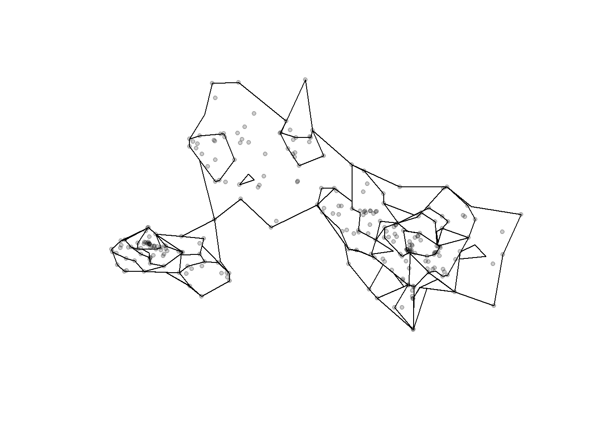
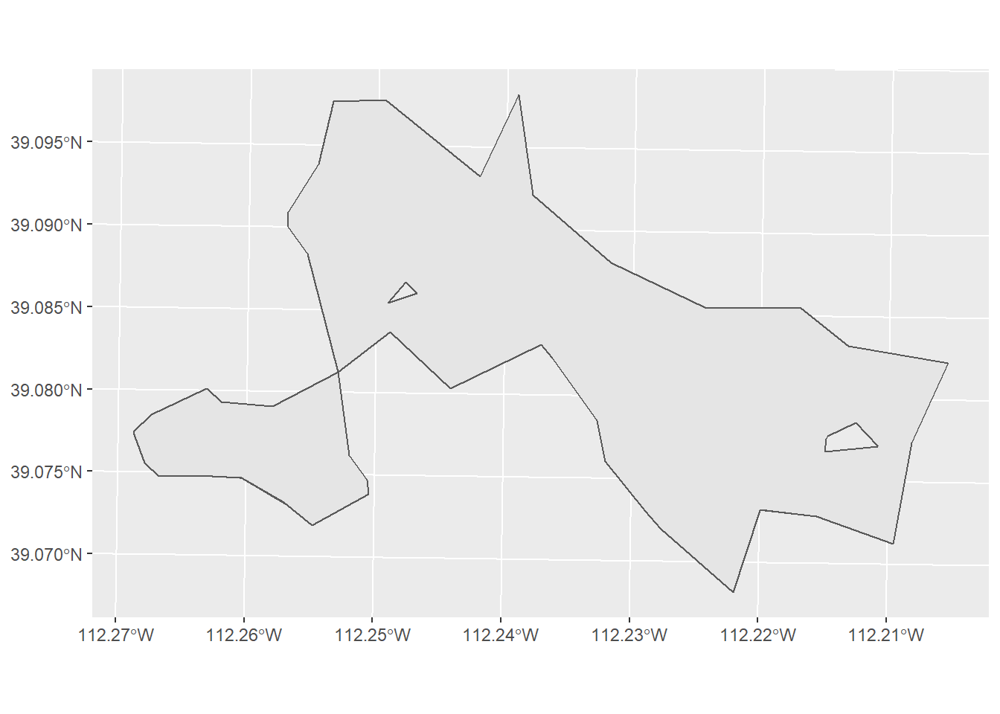
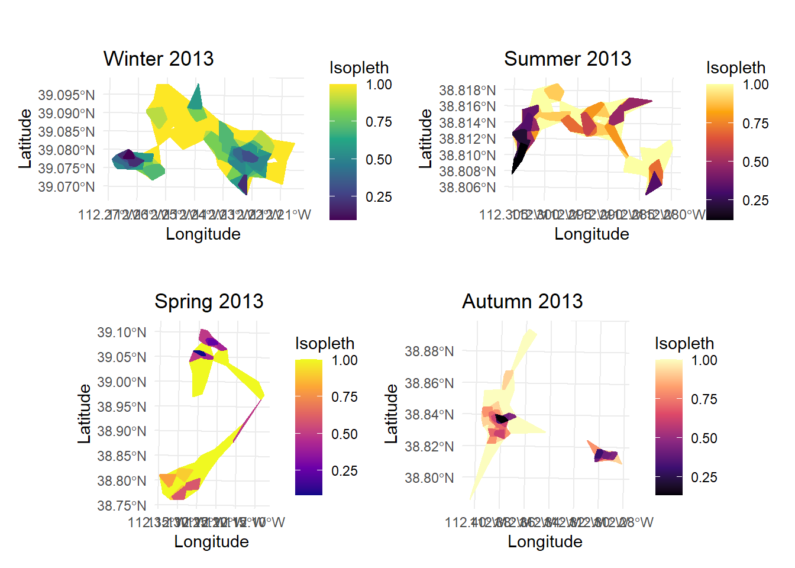
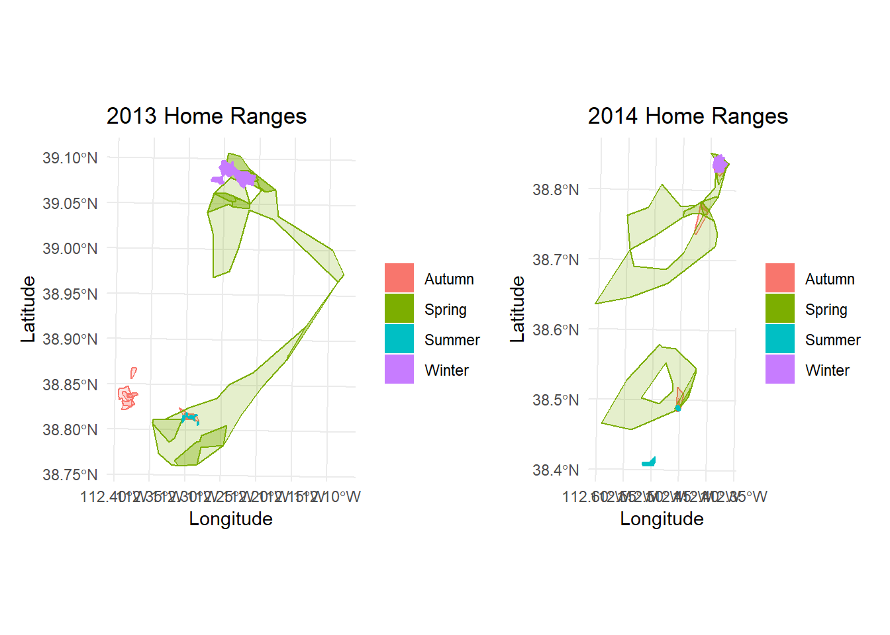
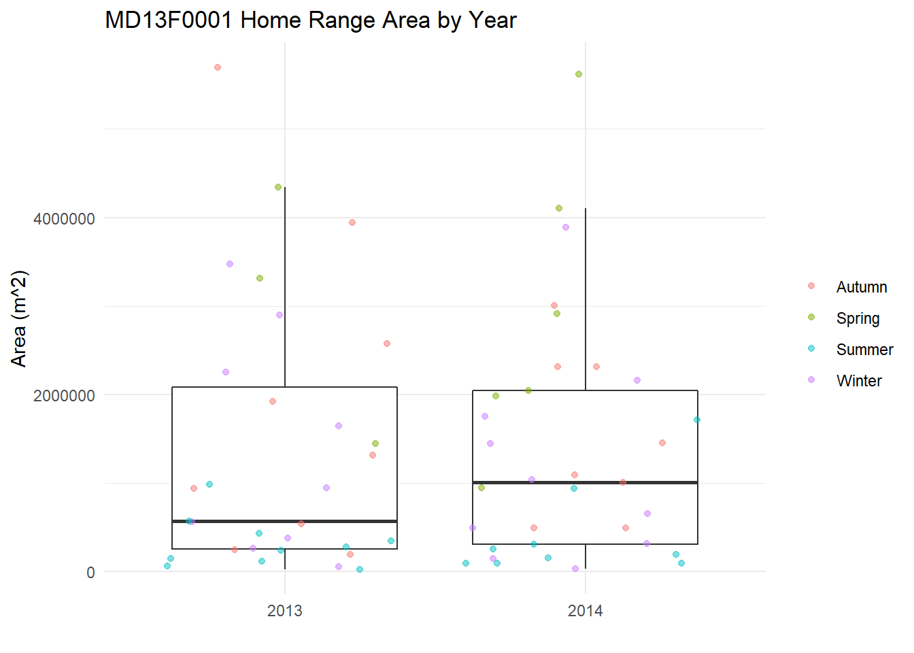
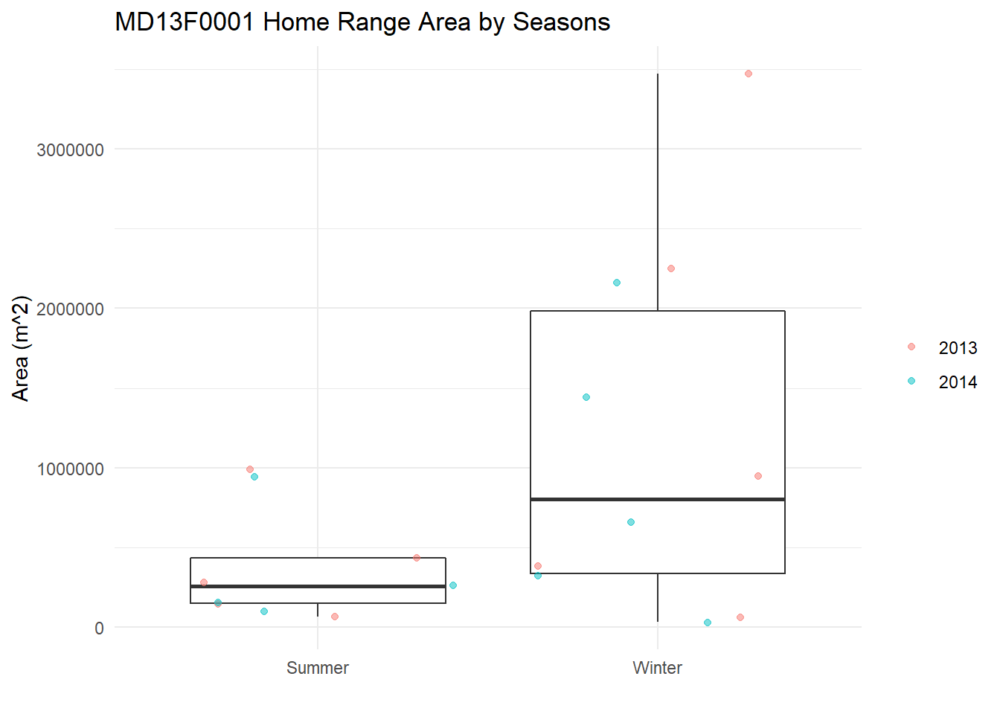

Chapter 3 Database Structure
3.1 Database Structure
To best structure all of my data, I will be storing my datasets into a database. My data will be in 3 main categories:
- GPS data from collared pronghorn and mule deer
- Barrier locations and attributes (roads, fences, railroads, etc.)
- Environmental covariates
- Elevation
- Landcover
- Vegetation type and phenology
- Snow depth

(#fig:dir_pic)Directory Structure
The above picture shows my directory structure for this project. This directory reflects an Activity-based organization, with all the code stored in one folder, all the data stored in one folder, etc.

(#fig:db_pic)Database Structure
The above picture shows my database structure. This database is of the GPS data from collared animals. The majority of data of barriers and environmental covariates will be in the form of shapefiles or rasters, and so were not included in this database structure.
3.2 Formatting Data
Before I can begin working in RSQLite, I have to first format my raw data into a structure matching my planned structure above.
To format my dataframes, I will be working with the packages dplyr – which allows me to manipulate dataframes – and lubridate – which allows me to work with date and time formats.
install.packages("dplyr")
install.packages("lubridate")library(dplyr)
library(lubridate)3.2.1 Base Format
I need to:
- Change the Date and Time column to class
POSIXctinstead ofcharacter. I can do this usinglubridate’s functionymd_hms() - Change the mortality column to class
logical, since the values are eitherTRUEorFALSE - Change the Collar ID column. Some Collar ID records are a different character length, so some have a 0 in front while others do not. This makes it seem like there are more collars deployed than in reality. So I need to check the number of characters in the Collar ID column and add a 0 if there are too few.
- Remove quotes around Animal IDs. There is at least one Animal ID record that has quotes around it while the others do not, so I want to remove these quotes.
- Rename the columns to the name format I prefer and sort them into an order I feel is more useful. (This part is only for aesthetics and consistency for me)
I’ve written all of these steps into a useable funciton, so all I need to do is plug in a dataframe as an argument and all of these formatting processes will happen at once.
base_format <- function(df){
# CHANGE DATE
# DateAndTime is character class, needs to be date
cat("Changing date format...", "\n") # print so user knows what step
df <- df %>%
dplyr::mutate(datetime = lubridate::ymd_hms(DateAndTime))
# CHANGE MORTALITY
# Mortality is character class, change to logical
cat("Changing mortality format...", "\n") # print so user knows what step
df <- df %>%
dplyr::mutate(mort = as.logical(Mortality))
# CHANGE COLLAR ID
# Adds a 0 in front to make sure they're all the same length
# removes the issue of duplicates where one collar ID had a 0 and one didn't
cat("Changing collar ID format...", "\n") # print so user knows what step
df <- df %>%
dplyr::mutate(
collar_id = case_when(nchar(CollarID) == 5 ~ paste0("0", CollarID),
nchar(CollarID) == 4 ~ paste0("00", CollarID),
TRUE ~ CollarID)
)
# REMOVING QUOTES
# there's a record in AnimalID that has quotes around the id
cat("Removing quotes...", "\n") # print so user knows what step
df <- df %>%
dplyr::mutate(AnimalID = gsub(x = AnimalID, pattern = '"', replacement = ""))
# SELECT COLUMNS
# rename columns to more useful format, sort into better order
cat("Sorting columns...", "\n") # print so user knows what step
df <- df %>%
dplyr::select(
OBJECTID,
animal_id = AnimalID,
species = Species,
sex = Sex,
datetime,
# added y and x so I can remember which one is which
lat_y = Latitude,
lon_x = Longitude,
cohort = CurrentCohort,
birth_year = BirthYear,
mortality = mort,
capture_unit = CaptureUnit,
collar_id,
freq = Freq,
num_stats = NumSats,
dop = Dop,
dim = Dimension,
proj = ProjectName)
cat("Done", "\n")
return(df)
}So now all I need to do is load my raw data and immediately pipe it into this formatting function.
all_dat <- readRDS("Data/GPS/all_data.rds") %>%
as_tibble() %>%
base_format()3.2.2 Sort into Different Datasets
Now I can begin to sort into the different datasets for my final database structure
3.2.2.1 Individuals Dataset
indiv <- all_dat %>%
distinct(animal_id,
species,
sex,
cohort,
birth_year,
capture_unit)This table now shows the individual animals and their sex, species, birth year, and the management unit where they were captured.
3.2.2.2 Collar Deployment Dataset
This table will show the animals with their collars. Because some collars were used on more than one individual or an individual had more than one collar, I need to add a start and end date of when these animals had their specific collars.
collar_deploy <- all_dat %>%
group_by(animal_id, collar_id) %>%
mutate(start = min(datetime),
end = max(datetime)) %>%
distinct(animal_id, collar_id, start, end)
# create deployment ID
deploy_id <- seq(1:nrow(collar_deploy))
collar_deploy <- cbind(deploy_id, collar_deploy)3.2.2.3 Location Dataset
For the Location datset, I also need to add a column for UTM x and UTM y. My study area is in Utah, which is UTM Zone 12N. To convert to UTM, I need to use the package sf. I also want to make sure I don’t have any datapoints outside of Utah, so I need the package maps to generate a sf object of Utah.
install.packages("sf")
install.packages("maps")library(sf)
library(maps)To make the conversion and clipping easier, I’ll create a function to convert given latitude and longitude coordinates to UTM and to check if these coordinates are within Utah.
convert_utm <- function(latlon_df){
utm_df <- latlon_df %>%
dplyr::select(loc_id, lat_y, lon_x) %>%
# turns df into sf object with geometry
sf::st_as_sf(coords = c("lon_x", "lat_y"),
crs = 4326) %>% # WGS84 = EPSG 4326
# converts geometry to UTM 12N projection
sf::st_transform(crs = 32612) %>% # UTM 12N = EPSG 32612
# creates a new column of x and y UTM 12N coordinates
dplyr::mutate(utm_x = sf::st_coordinates(.)[, 1],
utm_y = sf::st_coordinates(.)[, 2]) %>%
# drops geometry column
sf::st_drop_geometry()
df <- latlon_df %>%
left_join(utm_df, by = "loc_id")
return(df)
}clip_to_ut <- function(df){
df_sf <- df %>%
# transforms into sf object (WGS84 = EPSG 4326 )
st_as_sf(coords = c("lon_x", "lat_y"), crs = 4326) %>%
dplyr::select(loc_id, geometry)
# load obj of usa from package "maps"
usa <- maps::map("state", plot = F, fill = TRUE) %>%
# turn into sf obj
st_as_sf()
utah <- usa %>%
# finds the centroid
st_centroid() %>%
# pulls out the coordinates
st_coordinates() %>%
# binds x and y coordinates so they can be their own column in "usa"
cbind(usa) %>%
# pull out utah
filter(ID == "utah")
# makes a new column called "indicator" which makes TRUE or FALSE if the point
# falls within Utah
df_sf$indicator <- st_within(df_sf, utah) %>%
lengths > 0
# join with original dataframe
df <- left_join(df, df_sf, by = "loc_id")
# pull out just the rows that are indicated as TRUE, meaning they are inside
# Utah
df_clip <- df %>%
subset(df$indicator == TRUE) %>%
# drop indicator and geometry columns
dplyr::select(-indicator) %>%
dplyr::select(-geometry)
return(df_clip)
}Now I just need to pipe the data through these functions.
loc <- all_dat %>%
mutate(loc_id = seq(1:nrow(all_dat))) %>%
dplyr::select(loc_id, animal_id, datetime, lat_y, lon_x) %>%
convert_utm() %>%
clip_to_ut()3.3 RSQLite
Now that I’ve formatted all my datasets, it’s time to put them together in a database.
To form this database, I will be working in with the package RSQLite
# Install Packages----
install.packages("RSQLite")# Load Packages----
library(DBI)Once the package is installed and loaded, I can begin working in RSQLite. First, I need to create the database.
# Establish Database Connection
db = dbConnect(drv = RSQLite::SQLite(), "Data/barrier_proj.db")Then, I need to create the tables for all of my datasets. I need to create the individuals table first because it has no foreign key but its primary key (animal_id) is a foreign key for the other tables.
dbExecute(db,
"CREATE TABLE individuals(
animal_id char(9) NOT NULL PRIMARY KEY,
species char(8),
sex char(1) CHECK (sex IN ('M', 'F', 'U')),
cohort varchar(10),
birth_year integer,
capture_unit varchar(20)
);")I made animal_id of class char instead of varchar because every ID follows the same format: SPYYSXXXX
- SP = species abbreviation (MD or PR)
- YY = year captured
- S = sex
- XXXX = incremental unit
For example, the 10th female mule deer captured in 2017 would have an id MD17F0010
Fortunately, both “pronghorn” and “mule deer” have the same number of characters (8), so I can make species a char class instead of varchar.
Let’s check that the table was built ok. Since I didn’t put any data yet, it should be empty.
dbGetQuery(conn = db, statement = "SELECT * FROM individuals;")Awesome! Now I can create the other tables that use animal_id as a foreign key.
dbExecute(db,
"CREATE TABLE collar_deploy(
deploy_id integer NOT NULL PRIMARY KEY,
collar_id integer,
animal_id char(9),
start text,
end text,
FOREIGN KEY (animal_id) REFERENCES individuals(animal_id)
);")
dbExecute(db,
"CREATE TABLE location(
loc_id integer NOT NULL PRIMARY KEY,
animal_id char(9),
datetime text,
lat_y double,
lon_x double,
utm_x double,
utm_y double,
FOREIGN KEY (animal_id) REFERENCES individuals(animal_id)
);")After the tables are created, all I need to do is import the data into the database.
dbWriteTable(db, "individuals", indiv, append = TRUE)
dbWriteTable(db, "collar_deploy", collar, append = TRUE)
dbWriteTable(db, "location", loc, append = TRUE)
<!--chapter:end:02-structure.Rmd-->
# Home Range Visualization {#hr_viz}
## LoCoH Home Ranges
A home range is defined as "the area an animal normally travels" (Burt, 1943), or a spatially bounded pattern of an individual's space-use process. A home range is not necessarily the same inter- or intra-annually -- this is especially true for migrants or partial-migrants. Because a home range is dependent on temporal scales, I will need to delineate home ranges of a specific season within a specifc year, as this home range is likely to change by the next season or year. To estimate home ranges, I need to generate a utilization distribution (UD) -- the probability density distribution of animal occurrence in a two-dimensional space -- which is bounded by a specific contour aka isopleth.
### Research Questions
* How does an animal's home range shape change with the presence of linear features (roads or fences)?
* How does an animal's home range area change with barrier density?
LoCoH -- or Local Convex Hull -- differs from other home range UDs in that it shows gaps and sharp boundaries of the animal's movement. This is useful for my research because I can see if the home range shape is affected by linear features -- such as if it runs parallel to a barrier.
### Objectives
My objective for this code is to delineate and plot the LoCoH home range for every season of every year for every individual. I also want to plot a boxplot of the estimated areas of that year's home ranges.
## Set Up
For this task, I'll be using a lot of packages. I'll use `dplyr` to pipe and organize the dataframes, but since I'll also use `ggplot2`, I will just go ahead and use the whole `tidyverse` package. I'll also use `lubridate` to help deal with year formatting. To deal with simple features and spatial data, I'll use the packages `sf` and `sp`. To help make my plots look nice, I'll use the packages `patchwork` and `viridis`. And, finally, to deal with steps and home ranges, I'll use the package `amt`.install.packages("tidyverse")
install.packages("lubridate")
install.packages("amt")
install.packages("sp")
install.packages("sf")
install.packages("patchwork")
install.packages("viridis")library(tidyverse)
library(lubridate)
library(amt)
library(sp)
library(sf)
library(patchwork)
library(viridis)in_dir <- "Data/GPS/Processed/Individuals/"
out_dir <- "Analysis/Output/LoCoH/"
# Check if the output directory exists or not
if (!dir.exists(out_dir)) {
dir.create(out_dir, recursive = TRUE)
} ani_fn <- list.files(path = in_dir, full.names = TRUE)[1]iso_levels <- seq(0.1, 1, by = 0.1)
locoh_type <- "a"Based on previous research on migratory or partially migratory pronghorn and mule deer in Utah, I can be reasonably certain of the times when these animals would be in their summer and winter ranges and when they would be in their spring and autumn migrations.
| Season | Dates |
|---|---|
| Summer | July 1 - September 30 |
| Winter | January 1 - March 31 |
| - | - |
| Spring | April 1 - June 30 |
| Autumn | October 1 - December 31 |
winter <- c(1, 2, 3)
spring <- c(4, 5, 6)
summer <- c(7, 8, 9)
autumn <- c(10, 11, 12)3.4 LoCoH Home Range for One Season
3.4.1 Delineate Seasonal LoCoH Hull
First I need to read in the rds data into a data frame. I only need the animal ID, the date and time stamp, and utm x and y positions. To be safe, I’m also going to sort the datetime column. Then, for ease, I’ll add a column of the year and the season of that position.
animal_df <- readRDS(ani_fn) %>%
dplyr::select(animal_id, datetime, utm_x, utm_y) %>%
as_tibble() %>%
# sort by earliest to latest datetime
arrange(datetime) %>%
# make a column for year and season
mutate(
yr = year(datetime),
ssn = case_when(month(datetime) %in% winter ~ "Winter",
month(datetime) %in% spring ~ "Spring",
month(datetime) %in% summer ~ "Summer",
month(datetime) %in% autumn ~ "Autumn"))Let’s see how many years this individual was tracked
print(unique(animal_df$yr))## [1] 2013 2014Let’s just work with 2013 data for now, so let’s filter the animal_df dataframe.
ani_yr <- animal_df %>%
filter(yr == 2013)Let’s see how many seasons this individual was tracked in 2013
print(unique(ani_yr$ssn))## [1] "Winter" "Spring" "Summer" "Autumn"Let’s just work with Winter data for now, so let’s filter the ani_yr dataframe.
ani_ssn <- ani_yr %>%
filter(ssn == "Winter")Now that I have a dataframe of just one season in one year for one individual, I can delineate this season’s LoCoH hull. I’ll use the make_track function from the amt package to make a track of all the individual’s steps of this season, and then the function hr_locoh to delineate the LoCoH hulls with the isopleth levels I specified earlier.
# make the track
track <- ani_ssn %>%
make_track(utm_x, utm_y, datetime, animal_id,
# EPSG:32612 = WGS 84 / UTM zone 12N
crs = CRS("+init=epsg:32612"))
# calculate the max distance between points for parameter "n"
max_dist <- track[, c("x_", "y_")] %>%
dist() %>%
max()
# delineate the locoh home range for the given season
locoh_ssn <- track %>%
hr_locoh(levels = iso_levels,
keep.data = TRUE,
n = max_dist,
type = locoh_type,
rand_buffer = 1e-05)3.4.2 Plot Home Range
Now that I have the LoCoH hull of this season, I can plot it and save the plot and data.
plot(locoh_ssn)
Let’s try in ggplot. First I have to turn locoh_ssn into an sf object using the function hr_isopleths in amt.
locoh_ssn %>%
hr_isopleths() %>%
ggplot() +
geom_sf()
But right now, the isopleth levels are from small to large, so the largest isopleth are stacked on top and I can’t see the smaller ones. So first I have to re-arrange the levels.
locoh_ssn %>%
hr_isopleths() %>%
arrange(desc(level)) %>%
ggplot() +
geom_sf()
Great! But I can’t tell which isopleth is which
locoh_ssn %>%
hr_isopleths() %>%
arrange(desc(level)) %>%
ggplot() +
geom_sf(aes(fill = level))
The darker colors are of the smaller isopleths, showing the areas where the animal spent the majority of their time in this season.
This plot is fine, but let’s pretty it up a little. I’m going to remove the outlines of the isopleths, change the theme, add labels for the axes, legend, and title, and change the color scheme to viridis.
ani_name <- unique(animal_df$animal_id)
locoh_ssn %>%
hr_isopleths() %>%
arrange(desc(level)) %>%
ggplot() +
geom_sf(aes(fill = level, color = level)) +
theme_minimal() +
labs(x = "Longitude", y = "Latitude",
title = paste(ani_name, "LoCoH Winter 2013"),
fill = "Isopleth", color = "Isopleth") +
scale_color_viridis_c(aesthetics = c("color", "fill"),
option = "inferno")
I can also add the animal’s original position points
locoh_ssn %>%
hr_isopleths() %>%
arrange(desc(level)) %>%
ggplot() +
geom_sf(aes(fill = level, color = level)) +
theme_minimal() +
labs(x = "Longitude", y = "Latitude",
title = paste(ani_name, "LoCoH Winter 2013"),
fill = "Isopleth", color = "Isopleth") +
scale_color_viridis_c(aesthetics = c("color", "fill"),
option = "inferno") +
geom_point(data = locoh_ssn$data,
mapping = aes(x = x_, y = y_),
alpha = 0.2)
Looks great! Let’s save this plot in an output figure’s folder.
plot_fn <- paste0(ani_name, "2013_winter.tiff")
ggsave(plot_fn, path = out_dir)3.5 LoCoH Home Range for all seasons in all years
However, it’s not very useful to copy and paste this code for every season of every year for this individual, and becomes even more tedious when I introduce this for more than one individual. In my real data, I have 3901 individuals, so it would make more sense to loop over all of these functions using lapply.
Here’s all of the functions I went through above but now in nested loops
# load and format individual's data frame
animal_df <- readRDS(ani_fn) %>%
dplyr::select(animal_id, datetime, utm_x, utm_y) %>%
as_tibble() %>%
arrange(datetime) %>%
mutate(
yr = year(datetime),
ssn = case_when(month(datetime) %in% winter ~ "Winter",
month(datetime) %in% spring ~ "Spring",
month(datetime) %in% summer ~ "Summer",
month(datetime) %in% autumn ~ "Autumn"))
# make a vector for the unique years
years <- unique(animal_df$yr)
# Loop through every year for this individual
# (returns a list of locoh for all years with all seasons of those years)
locoh <- lapply(1:length(years), function(y){
# filter by year
ani_yr <- animal_df %>%
filter(yr == years[y])
# make a vector for the unique seasons of that year
seasons <- unique(ani_yr$ssn)
# Loop through every seasons for that year
# (returns a list of locoh for all the seasons of that year)
locoh_yr <- lapply(1:length(seasons), function(s){
# filter by season
ani_ssn <- ani_yr %>%
filter(ssn == seasons[s])
# delineate the locoh home range for the given season
# make the track
track <- ani_ssn %>%
make_track(utm_x, utm_y, datetime, animal_id,
# EPSG:32612 = WGS 84 / UTM zone 12N
crs = CRS("+init=epsg:32612"))
# calculate the max distance between points for parameter "n"
max_dist <- track[, c("x_", "y_")] %>%
dist() %>%
max()
locoh_ssn <- track %>%
hr_locoh(levels = iso_levels,
keep.data = TRUE,
n = max_dist,
type = locoh_type,
rand_buffer = 1e-05)
return(locoh_ssn)
})
# name the elements of this list after the seaons of that year
names(locoh_yr) <- seasons
return(locoh_yr)
})
# name the elements of this list after the years for this individual
names(locoh) <- yearsNow, I have a large list of every LoCoH home range of this individual, named with its corresponding season and year. I can access this data by indexing, such as locoh[[1]][[3]] or using the names of each list, such as locoh$2013$"Summer". Or I can use lapply again to get all seasons of all years into one dataframe.
years <- names(locoh)
hr_sf <- lapply(1:length(locoh), function(y){
hr_yr <- lapply(1:length(locoh[[y]]), function(s){
seasons <- names(locoh[[y]])
hr <- locoh[[y]][[s]] %>%
hr_isopleths() %>%
arrange(desc(level)) %>%
mutate(
year = years[y],
season = seasons[s])
return(hr)
}) %>%
bind_rows()
}) %>%
bind_rows()I can use this to plot all the seasonal LoCoH hulls of a single year together.
winter_2013 <- hr_sf %>%
filter(year == 2013 & season == "Winter") %>%
ggplot(aes(fill = level, color = level)) +
geom_sf() +
theme_minimal() +
labs(x = "Longitude", y = "Latitude",
title = "Winter 2013",
fill = "Isopleth", color = "Isopleth") +
scale_color_viridis_c(aesthetics = c("color", "fill"))
summer_2013 <- hr_sf %>%
filter(year == 2013 & season == "Summer") %>%
ggplot(aes(fill = level, color = level)) +
geom_sf() +
theme_minimal() +
labs(x = "Longitude", y = "Latitude",
title = "Summer 2013",
fill = "Isopleth", color = "Isopleth") +
scale_color_viridis_c(aesthetics = c("color", "fill"),
option = "inferno")
spring_2013 <- hr_sf %>%
filter(year == 2013 & season == "Spring") %>%
ggplot(aes(fill = level, color = level)) +
geom_sf() +
theme_minimal() +
labs(x = "Longitude", y = "Latitude",
title = "Spring 2013",
fill = "Isopleth", color = "Isopleth") +
scale_color_viridis_c(aesthetics = c("color", "fill"),
option = "plasma")
autumn_2013 <- hr_sf %>%
filter(year == 2013 & season == "Autumn") %>%
ggplot(aes(fill = level, color = level)) +
geom_sf() +
theme_minimal() +
labs(x = "Longitude", y = "Latitude",
title = "Autumn 2013",
fill = "Isopleth", color = "Isopleth") +
scale_color_viridis_c(aesthetics = c("color", "fill"),
option = "magma")
(winter_2013 | summer_2013) /(spring_2013 | autumn_2013)
winter_plot <- hr_sf %>%
filter(season == "Winter") %>%
ggplot(aes(fill = level, color = year)) +
geom_sf() +
scale_fill_viridis_c() +
theme_minimal() +
labs(x = "Longitude", y = "Latitude",
title = "MD13F0001 Winter LoCoH Hull",
fill = "Isopleth")
summer_plot <- hr_sf %>%
filter(season == "Summer") %>%
ggplot(aes(fill = level, color = year)) +
geom_sf() +
scale_fill_viridis_c(option = "plasma") +
theme_minimal() +
labs(x = "Longitude", y = "Latitude",
title = "MD13F0001 Summer LoCoH Hull",
fill = "Isopleth")
winter_plot | summer_plot
season_2013 <- hr_sf %>%
filter(year == 2013 &
season == c("Winter", "Summer"))
transition_2013 <- hr_sf %>%
filter(year == 2013 &
season == c("Spring", "Autumn"))
season_2014 <- hr_sf %>%
filter(year == 2014 &
season == c("Winter", "Summer"))
transition_2014 <- hr_sf %>%
filter(year == 2014 &
season == c("Spring", "Autumn"))
p_2013 <- ggplot() +
geom_sf(data = transition_2013,
mapping = aes(fill = season, color = season),
alpha = 0.2) +
geom_sf(data = season_2013,
mapping = aes(fill = season, color = season)) +
theme_minimal() +
labs(x = "Longitude", y = "Latitude",
title = "2013 Home Ranges",
fill = "", color = "")
p_2014 <- ggplot() +
geom_sf(data = transition_2014,
mapping = aes(fill = season, color = season),
alpha = 0.2) +
geom_sf(data = season_2014,
mapping = aes(fill = season, color = season)) +
theme_minimal() +
labs(x = "Longitude", y = "Latitude",
title = "2014 Home Ranges",
fill = "", color = "")
p_2013 | p_2014
3.5.1 Home Range Area
I can use a similar approach to make a data frame of areas of the home ranges using the function hr_area.
hr_area <- lapply(1:length(locoh), function(y){
hr_yr <- lapply(1:length(locoh[[y]]), function(s){
seasons <- names(locoh[[y]])
hr <- locoh[[y]][[s]] %>%
hr_area() %>%
mutate(
year = years[y],
season = seasons[s])
return(hr)
}) %>%
bind_rows()
}) %>%
bind_rows()How does total home range area differ by year?
hr_area %>%
filter(area < quantile(hr_area$area, .8)) %>%
ggplot(aes(x = year, y = area)) +
geom_boxplot(outlier.shape = NA) +
geom_jitter(aes(color = season), alpha = 0.5) +
labs(x = "", y = "Area (m^2)", color = "",
title = "MD13F0001 Home Range Area by Year") +
theme_minimal()
How does total summer area compare with total winter area?
hr_area %>%
filter(area < quantile(hr_area$area, .8) &
season == c("Winter", "Summer")) %>%
ggplot(aes(x = season, y = area)) +
geom_boxplot(outlier.shape = NA) +
geom_jitter(aes(color = year), alpha = 0.5) +
labs(x = "", y = "Area (m^2)", color = "",
title = "MD13F0001 Home Range Area by Seasons") +
theme_minimal()
How do the seasonal areas change by year?
hr_area %>%
filter(area < quantile(hr_area$area, .8)) %>%
ggplot(aes(x = factor(season,
levels = c("Winter", "Spring", "Summer", "Autumn")), y = area,
color = year)) +
geom_boxplot() +
labs(x = "", y = "Area (m^2)", color = "",
title = "MD13F0001 Home Range Area by Season") +
theme_minimal()
Burt, W.H. (1943). Territoriality and home range concepts as applied
to mammals. J. Mammal., 24, 346.